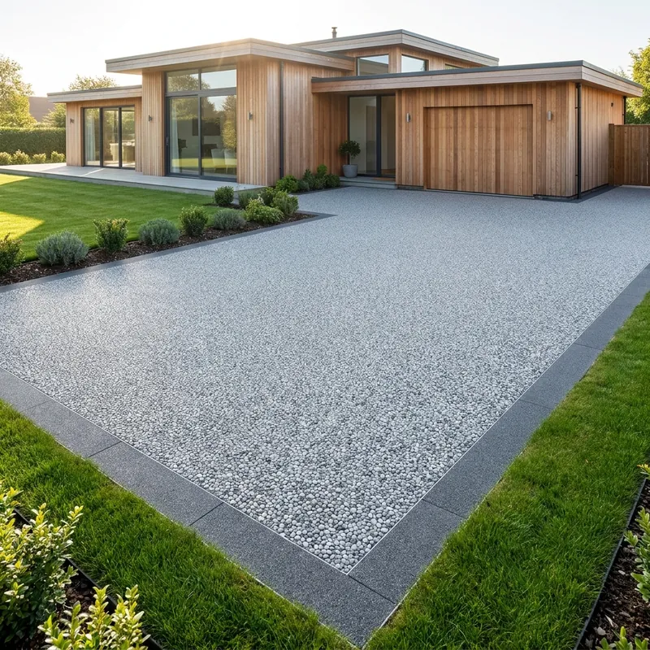
Дорожки и подъезды
Ровное покрытие к дому и гаражу

ОренбургБиоСтрой56
Производитель натуральной каменной крошки в Оренбурге: сортировка по фракциям, промывка, сушка и фасовка.
Смотреть проектыОбразцы
Мрамор, яшма, змеевик, фельзит, гранит, златолит, речная галька и миксы. Фракции 3-5 и 5-10 мм для каменного ковра.
Весь ассортимент
Производство
Камень проходит грохот, механическую промывку и сушку, затем фасуется в мешки 10 и 20 кг или мягкий контейнер на 1 т.
Продаём оптом и в розницу — напрямую с производства.
Подробнее
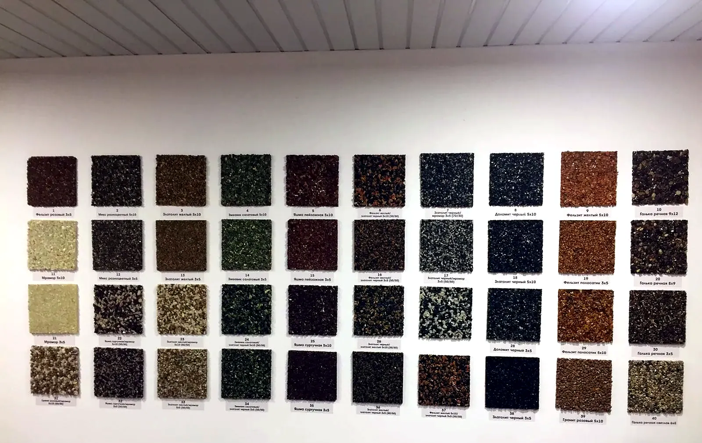
Сервис
Подберём камень и фракцию под ваш проект — каменный ковёр, дорожки, площадки, ландшафт — и посчитаем нужное количество. Мешки 10 и 20 кг в розницу, мягкий контейнер на 1 т для опта.
Связаться
Ровное покрытие к дому и гаражу
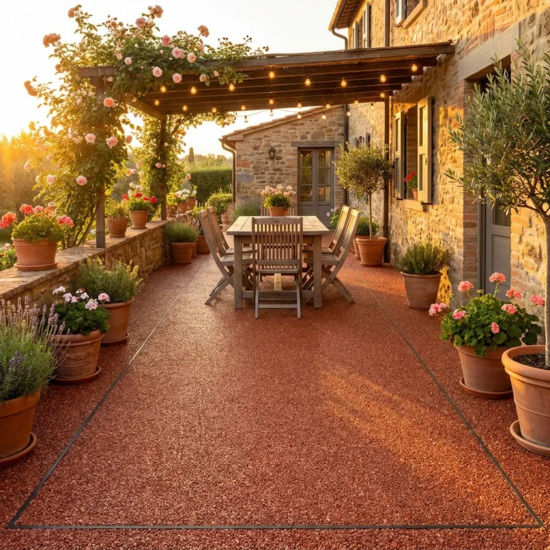
Терраса у дома в цвете камня
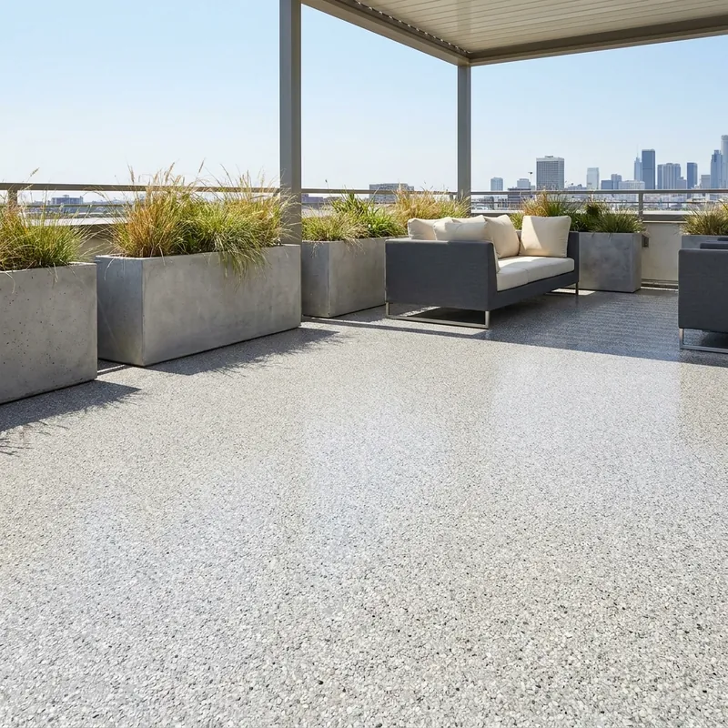
Светлый ровный пол под открытым небом
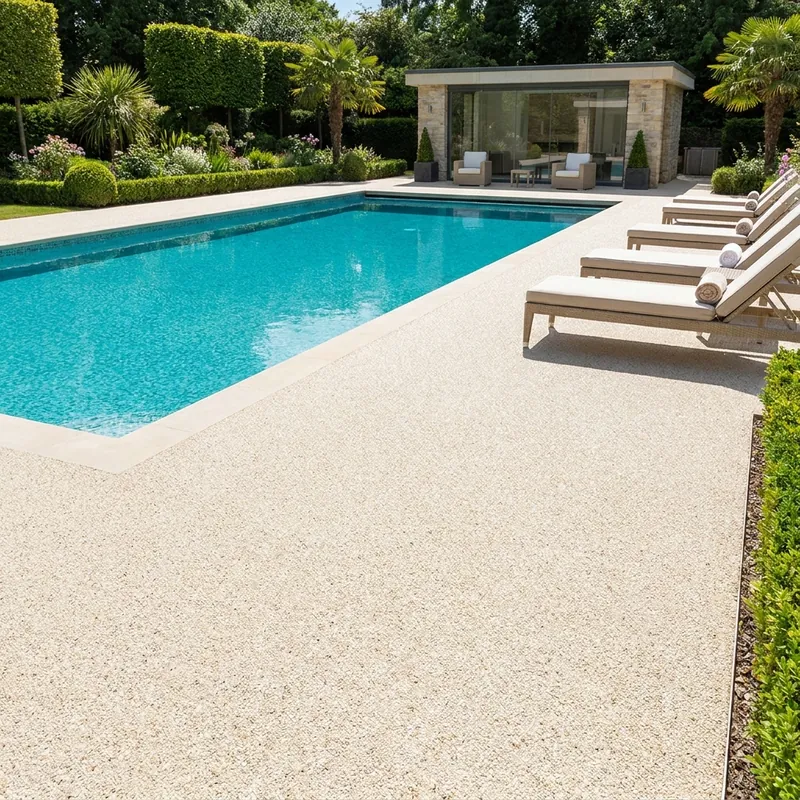
Светлый каменный ковёр у воды
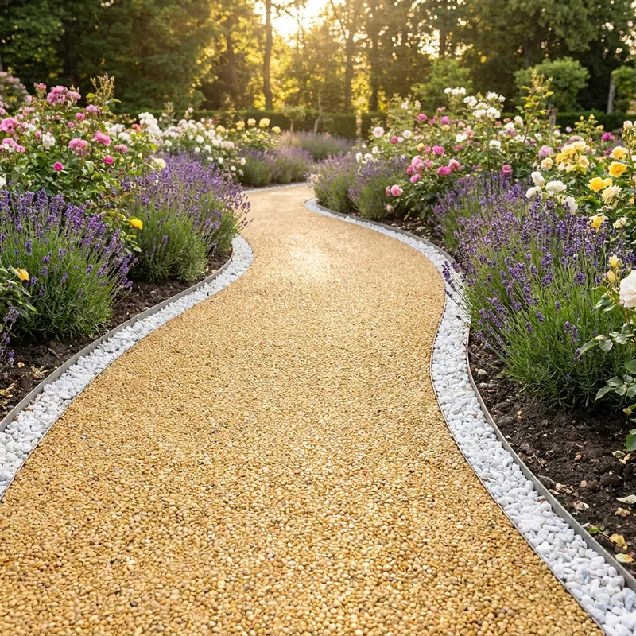
Дорожки между клумбами
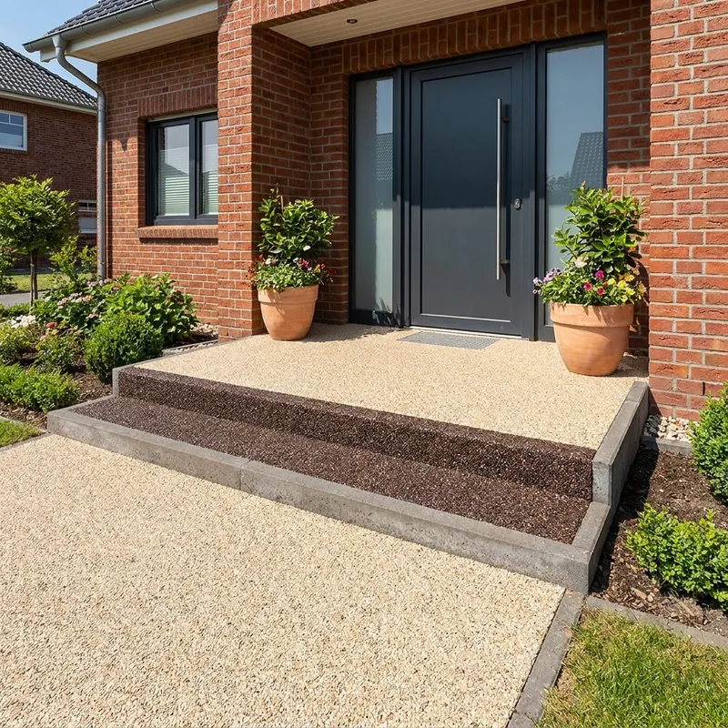
Ступени и площадка у входа
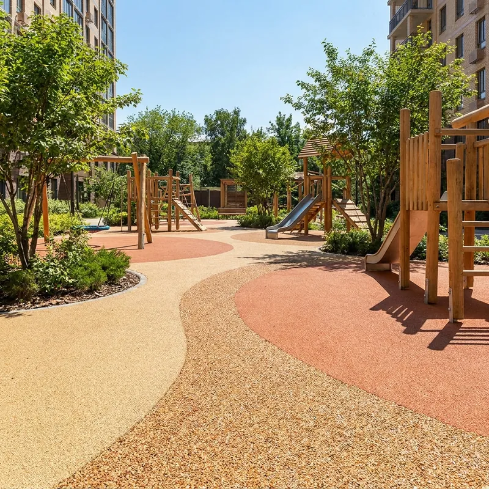
Зоны вокруг игрового оборудования
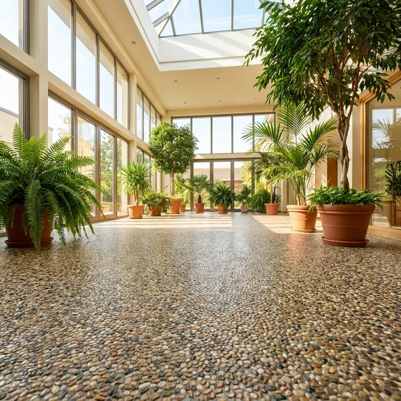
Холлы и зимние сады
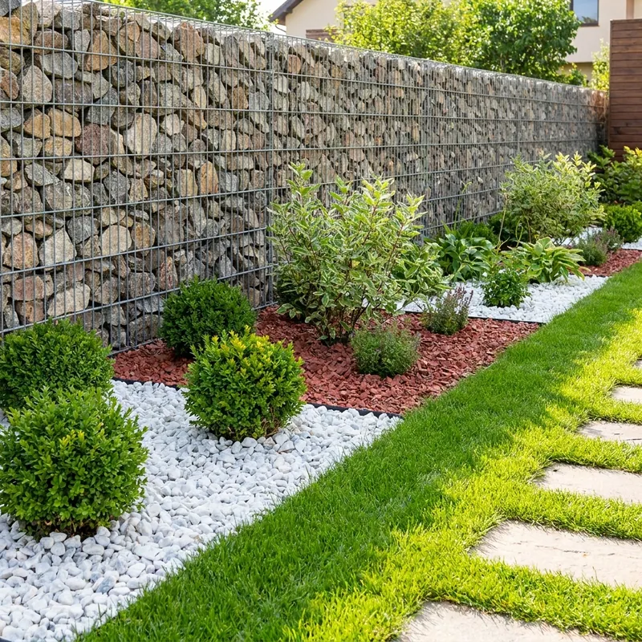
Клумбы, отсыпка, габионы
Полезное
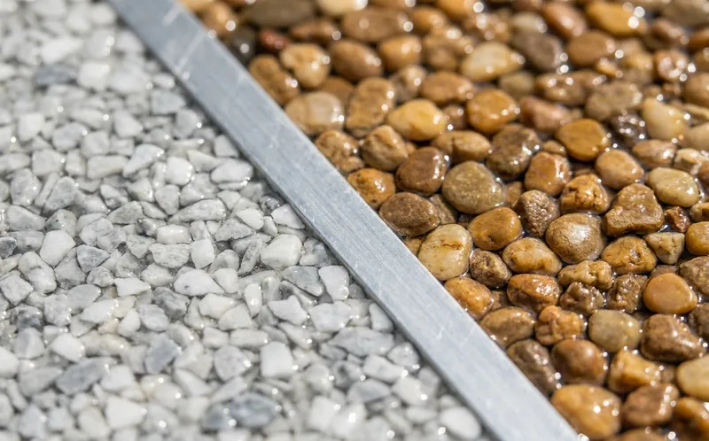
Выбор камняФракция — размер зерна. У большинства камней есть обе: 3-5 мм — мелкое зерно, 5-10 мм — крупнее. Сравните образцы, чтобы увидеть, как каждая фракция смотрится в покрытии.
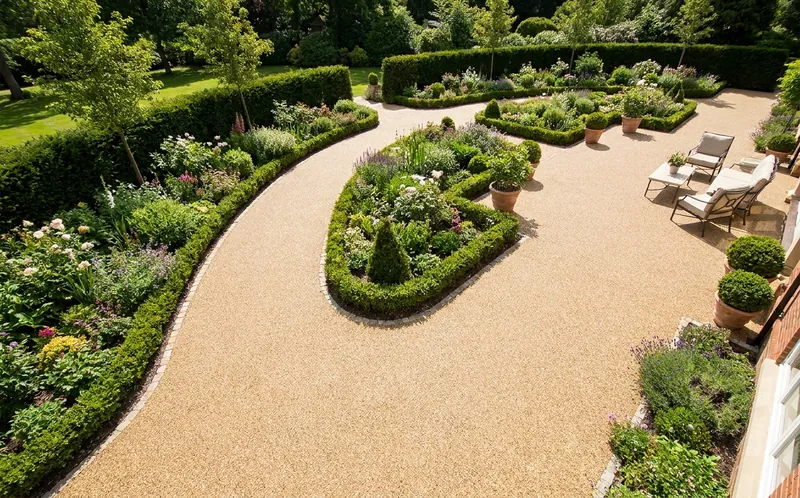
УпаковкаМешки 10 и 20 кг удобны для своего двора и небольших площадей. Мягкий контейнер на 1 т — для крупных объёмов и опта.
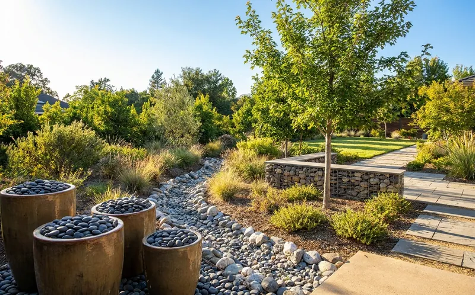
ПрименениеКрошку используют для благоустройства, отсыпки дорожек, детских площадок, габионов, флорариумов, вазонов и цветов в горшках. Фракции — от 3-5 до 40-70 мм.
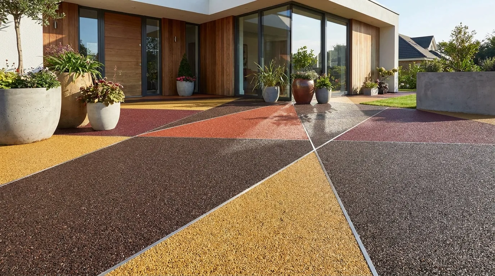
Идея для проекта
Тёмная основа и треугольные вставки из жёлтой, терракотовой и бордовой крошки. Цвета разделяют тонким бортиком, поэтому рисунок получается чётким.
Обсудить проектО нас
Производим декоративную каменную крошку в Оренбурге: сортируем на грохоте, промываем, сушим и фасуем. В ассортименте — крошка для каменного ковра и ландшафта, а также декоративные панели 1200×600 мм.